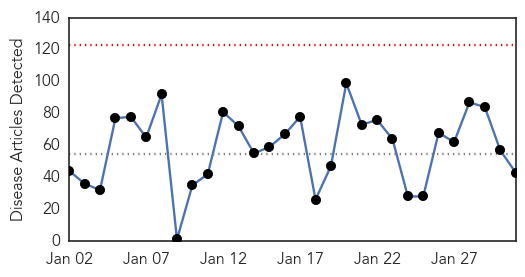
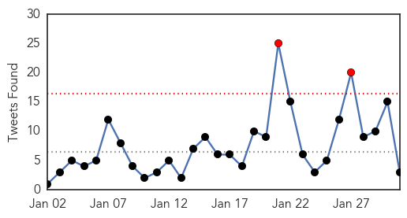

Unknown
30-Day Web Trend
0 alerts, 0 warnings

30-Day Twitter Trend
3 alerts, 0 warnings

Article Locations

Article Confidences

Top Articles:
- 0.952
- Second case of H7N9 bird flu confirmed in British Columbia
- 0.937
- Second bird flu case confirmed in Canada – BorneoPost Online
- 0.935
- Sudan Vision Daily
- 0.934
- Plague cases rise in Madagascar, fear of more epidemics: WHO
- 0.922
- Husband of Vancouver area woman with bird flu also contracted it
- 0.917
- Chicago Tribune
- 0.917
- Chicago Tribune
- 0.917
- Chicago Tribune
- 0.917
- Chicago Tribune
- 0.917
- Chicago Tribune
- 0.917
- Chicago Tribune
- 0.917
- Chicago Tribune
- 0.917
- Chicago Tribune
- 0.917
- Chicago Tribune
- 0.917
- Chicago Tribune
- 0.917
- Chicago Tribune
- 0.917
- Chicago Tribune
- 0.859
- Forecasting the flu better using social network
- 0.820
- Forecasting the flu better using social network
- 0.794
- Ukraine talks to begin amid fierce fighting in Debaltseve
- 0.794
- Ukraine peace talks end without agreement
- 0.794
- Kurdish fighters celebrate victory in shattered Kobane
- 0.794
- Italian lawmakers elect Judge Sergio Mattarella as president
- 0.794
- IS group claims to have beheaded second Japanese hostage
- 0.794
- Chadian troops repel Boko Haram attack in Cameroon
- 0.792
- Respiratory virus cases nearly double in 1 month - Story
- 0.789
- New TB Cases Confirmed in Charlotte - Story
- 0.774
- Beechwood rehab center not accepting new patients due to confirmed flu case
- 0.773
- CJAD 800 – News. Talk. Radio. :: New research shows this year's flu shot highly inneffective :: News
- 0.710
- Better forecasting of the flu, using Big and Traditional Data
- 0.703
- Nigeria H5N1 bird flu spreads to four more states, total 11
- 0.701
- the edge of knowledge
- 0.698
- S. Korea reports another suspected foot-and-mouth case among cattle
- 0.659
- Only apples from California contaminated
- 0.650
- SVHC comes out pro-fluoride : Rutland Herald Online
- 0.632
- Why is the world not fatigued by Zimbabwe’s situation?
- 0.621
- Visicular Stomatitis Outbreak Over 8 Months And 4 States Later
- 0.601
- Knowing when to head straight to ER could save a life
- 0.600
- Norway finds first case of mad cow disease, says food safe
- 0.540
- "Mugabe is Africa's choice, the West will have to deal with it"
- 0.535
- Health camps of US doctors for poor patients in Hyderabad
- 0.531
- Mugabe is Africa’s choice, the West will have to deal with it – Kwesi Pratt
- 0.503
- Dubai health chiefs close four clinics for violations
Top Tweets:
-
No tweets found for Jan 31, 2015
Ebola
30-Day Web Trend
0 alerts, 0 warnings

30-Day Twitter Trend
1 alerts, 0 warnings

Article Locations

Article Confidences

Top Articles:
- 1.000
- Ebola: third UK healthcare worker treated for virus
- 1.000
- Ebola outbreak: BA and Whitehall pushed to restart direct flights to virus-hit countries
- 1.000
- Ebola health worker flown back to UK after needle accident with patient in Sierra Leone
- 1.000
- Ebola: timeline of a ruthless killer - Sierra Leone
- 1.000
- Ebola worst may be over
- 0.999
- Ebola: military healthcare worker returns to UK after needle injury
- 0.999
- Brit flown back to UK after exposure to Ebola
- 0.999
- New British Ebola case as military healthcare worker is flown back for monitoring
- 0.999
- New British Ebola case as military healthcare worker is flown back for monitoring
- 0.999
- Ebola Could Be in California Capital
- 0.998
- Ebola Fears For British Military Medic After 'Needle Injury'
- 0.998
- Fort Bend Southwest Star Newspaper
- 0.998
- Breaking News: British Ebola nurse flown back to UK
- 0.996
- British military nurse flown to UK after it was "likely" they were infected with ebola
- 0.996
- Liberia delays school reopening by two weeks as Ebola cases fall
- 0.996
- Ebola: UN Urges More Help as Hundreds Are Tracked in Mali
- 0.996
- Liberia delays school reopening by two weeks as Ebola cases fall
- 0.995
- Ebola Outbreak: UK military healthworker in 'needle-stick injury' evacuated from Sierra Leone
- 0.994
- UK military healthcare worker admitted to Royal Free for ebola checks
- 0.994
- Health agencies elect not to mention possible Ebola case
- 0.993
- British military nurse flown back to UK after 'needle injury' treating Ebola victim
- 0.993
- British nurse exposed to deadly Ebola virus whilst working alongside Plymouth troops
- 0.993
- British worker flown home after needle jab in Ebola-infected Sierra Leone
- 0.988
- New Africa Regional Chief Aims to Shake Up Maligned WHO Office
- 0.986
- Ebola’s public health message: Sanitation is critical to containing the disease
- 0.984
- Ebola epidemic far from over, but tide is turning
- 0.979
- WHO: Prepare for Ebola
- 0.976
- British healthcare worker to be monitored for Ebola
- 0.967
- Briton flown to UK from Sierra Leone after ebola-needle prick
- 0.955
- UNMC Public Health Dean to Work in Sierra Leone on Ebola
- 0.937
- Dr Rebecca Moeti Appointed New Africa Regional Director for WHO
- 0.931
- International Meet in March to Plan Rebuilding of Ebola-hit States
- 0.928
- Second patient hospitalized in California undergoes Ebola testing
- 0.925
- Africa gets first woman WHO Director
- 0.921
- Bats challenge patients for space at health facility
- 0.912
- China sets up first high security bio lab
- 0.908
- Dr Moeti is new WHO Regional Director for Africa
- 0.878
- Littlehampton medic relives his time fighting Ebola epidemic
- 0.858
- Presidential rewards for Ebola cover up in Koinadugu – Chief Justice sacked
- 0.837
- AU Stresses Need For International Action Against Boko Haram, Ebola
- 0.833
- Kenya : Ebola crisis exposed African health institutions' weaknesses, says President Uhuru Kenyatta
- 0.814
- Bridge of Hope assists in donation of aid truck to Sierra Leone
- 0.790
- A British healthcare worker is being monitored for ebola, it has emerged
- 0.764
- New Africa Regional Chief Aims to Shake Up Maligned WHO Office
- 0.733
- Africa looks to extend new disaster insurance to Ebola-like epidemics
- 0.656
- Uganda sued over plan to ‘export’ 240 health workers
- 0.602
- AU leaders gather for conflict, Ebola talks
- 0.583
- UN chief calls for solidarity against Ebola to remain on course
Top Tweets:
- 0.969
- New confirmed ebola case in Liberia. Was down to 5 confirmed cases in Liberia, now it's 6 - UN Ebola response mission, UNMEER.
- 0.950
- No Ebola in two patients tested in Sacramento - SFGate http://t.co/VWRpvOqUq9 ebola EVD
- 0.950
- No Ebola in two patients tested in Sacramento - SFGate http://t.co/P2GuFm9E1h ebola EVD
- 0.927
- Two Sacramento-area patients test negative fore Ebola - San Jose Mercury News http://t.co/bIomVg5G2X ebola EVD
- 0.927
- Two Sacramento-area patients test negative fore Ebola - San Jose Mercury News http://t.co/GpArr73RJa ebola EVD
- 0.926
- UC Davis Medical Center patient tests negative for Ebola, but another case ... - San Jose Mercury News http://t.co/hgKV9yS4PF ebola EVD
- 0.917
- Ebola virus samples from this outbreak are 97% similar to the virus that first emerged in 1976. http://t.co/5XFnCWxv4C
- 0.912
- Second possible Ebola patient in Sacramento tests negative - Los Angeles Times http://t.co/2TtQuFDZ9U ebola EVD
- 0.882
- Two Sacramento-area patients test negative for Ebola - San Jose Mercury News http://t.co/bEyX7T4wvP ebola EVD
- 0.881
- Guinea's Africa Cup of Nations dream survives against all odds and Ebola taunts - The Guardian http://t.co/dQeq3jhg5O ebola EVD
- 0.866
- 2nd patient being tested for Ebola in Sacramento - SFGate http://t.co/dSlcLlG1NZ ebola EVD
- 0.816
- Liberia Moves From Ebola Control to Eradication - http://t.co/fA7y2iE4Pd http://t.co/eUkNTnIS3V ebola EVD
- 0.778
- Chimerix Ends Brincidofovir Ebola Trials To Focus On Adenovirus And CMV - Forbes http://t.co/BgETfafwdR ebola EVD
- 0.761
- RT: From NFL player to Ebola fighter. Read our PHNewswire Q&A with Madieu Williams: http://t.co/AamAaXqFog
- 0.736
- No evidence that Ebola virus is mutating to become more contagious or more easily spread. http://t.co/03kFx5lApN
- 0.681
- Ebola: military healthcare worker returns to UK after needle injury - The Guardian http://t.co/YuFqxtKNxY ebola EVD
- 0.640
- RT: Latest Ebola No.s from. Change in total/death/confirmed G: -1/+2/+4 L: 0/0/0/ SL: +24/+9/+12 TOTAL: 22,159/8,844/13,278…
- 0.582
- RT: Liberia had a big pre-Ebola drop in child mortality, & hence has the capacity to beat Ebola. http://t.co/Pkk1wanwZF http:/…
- 0.582
- RT: Liberia had a big pre-Ebola drop in child mortality, & hence has the capacity to beat Ebola. http://t.co/Pkk1wanwZF http:/…
- 0.513
- For first time since week ending 29 June 2014, @WHO reports less than 100 new confirmed Ebola cases in a week in 3 most affected countries